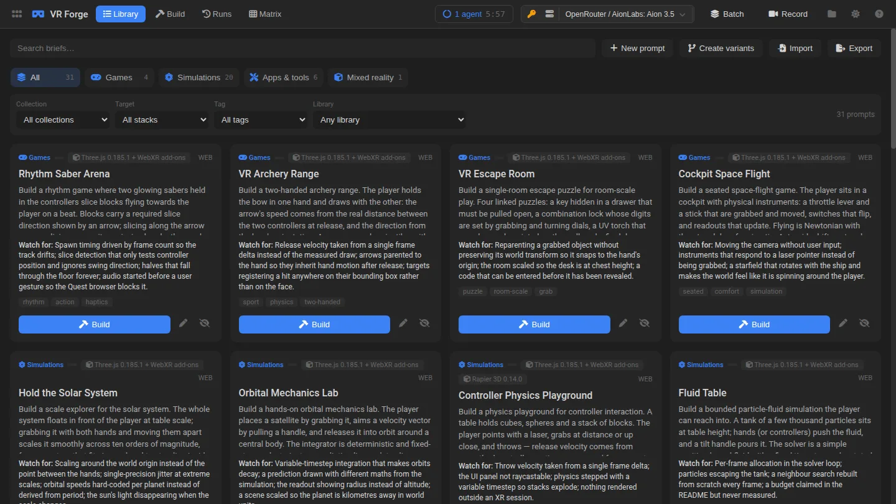

How it’s built · WebXR for Meta Quest 3
VR Forge
“It works in VR” is the hardest claim a generated project makes, and the easiest to fake: a scene that renders on a monitor can still fail the moment a headset asks for two eyes. VR Forge builds WebXR projects with the same agentic loop as Game Forge, then runs each one in an emulated Quest 3 and measures what happened.
- 31VR briefs: games, simulations and tools
- 16domain simulations, each naming its model
- 2eyes measured, not assumed
- 148unit tests on the app’s services

How a project is checked
- BriefA VR game or simulation, with three.js and WebXR add-ons, Rapier physics or Tone audio pinned.
- BuildThe shared forge kernel runs the agentic file loop.
- Emulated headsetAn emulated Quest 3 (IWER) is installed over
navigator.xrin the preview, and the project’s own Enter VR control is clicked. - MeasureDid a session start? How many viewports were drawn in one XR frame?
- EvidenceAn eye capture is saved, and the result reads “emulator-verified”, never “verified on Quest 3”.
Design decisions
Simulations with a named model
The sim briefs name the model they must implement, such as IDM and MOBIL for traffic, social forces for crowds, extreme-point packing for pallets, Barnes–Hut for galaxies or Schwarzschild geodesics for a black hole. A vague “make it realistic” cannot be checked; a named model can.
A desktop fallback, checked
Each project declares a non-XR fallback, and the validator checks that it boots and renders. That keeps builds reviewable without a headset, and it is how the showcase plays them in an ordinary browser.
Honest labels
The emulator proves the code path, not the comfort or frame rate on a real device. The app says so, and opening a build on a connected headset is recorded as provenance, not as evidence.
Same kernel as Game Forge
Runs, traces, budgets, pinned libraries and the previewer come from the shared forge kernel. VR adds its own domain and a verification lane.
Problems worth solving
- Pose checks pass for broken renderers. The emulator hands every project two correct eye poses, so a monoscopic renderer still looks healthy. The check that works is to record every
gl.viewportrectangle set inside one XR frame: two views with one viewport is an error. Two test fixtures that differ only in that block keep the check honest. - Screenshots that hang the page. Rasterising the DOM of a page whose render loop resizes a full-window WebGL canvas every frame blocked the main thread for minutes. VR runs skip it and keep the eye capture as their image.
- A regex that froze everything. The module rewriter used a pattern that backtracked exponentially on any exported function with no quote characters. A 1.2 KB matrix helper hung the preview. The pattern is now bounded, with a regression test.
- Import maps in a blob preview. Prefix mappings such as
three/addons/are expanded against the project’s files. Otherwise a project works on the headset and fails in the app.